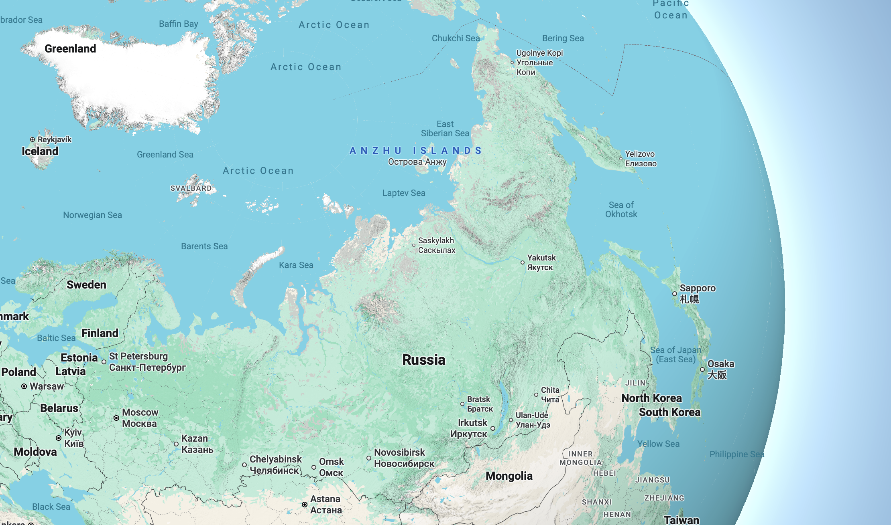
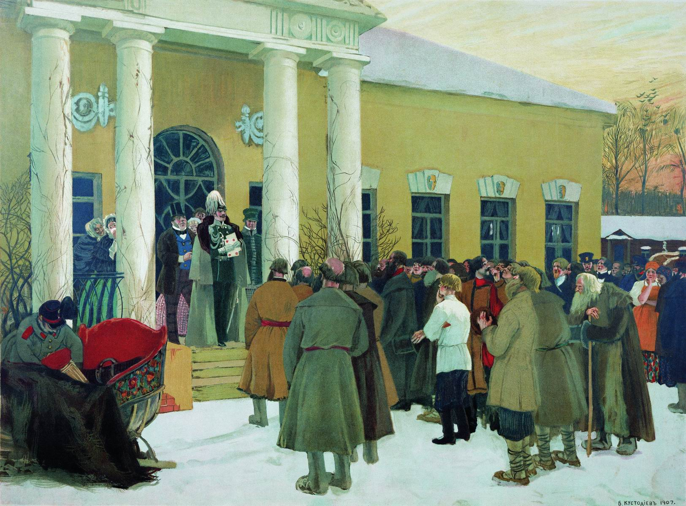
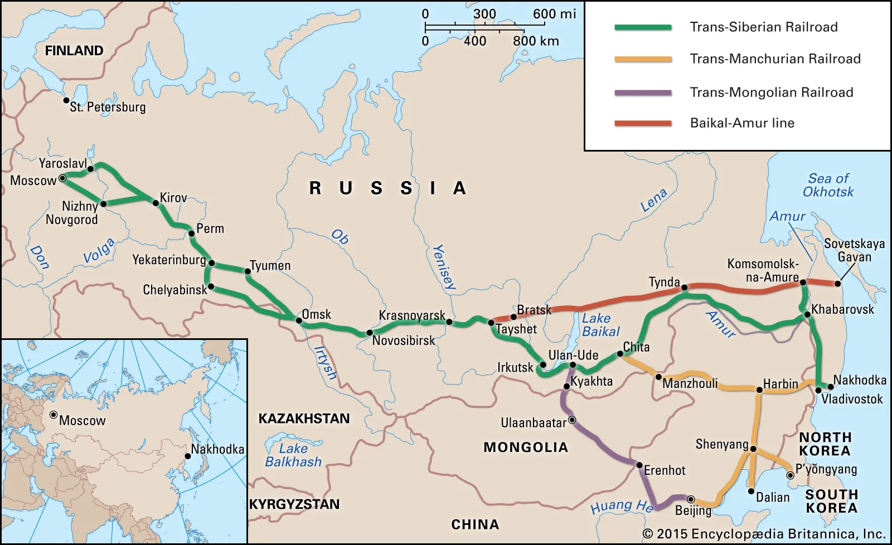
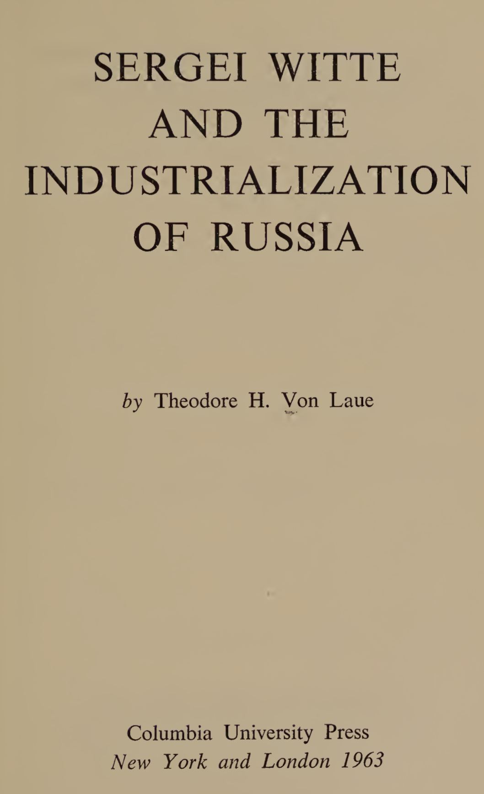
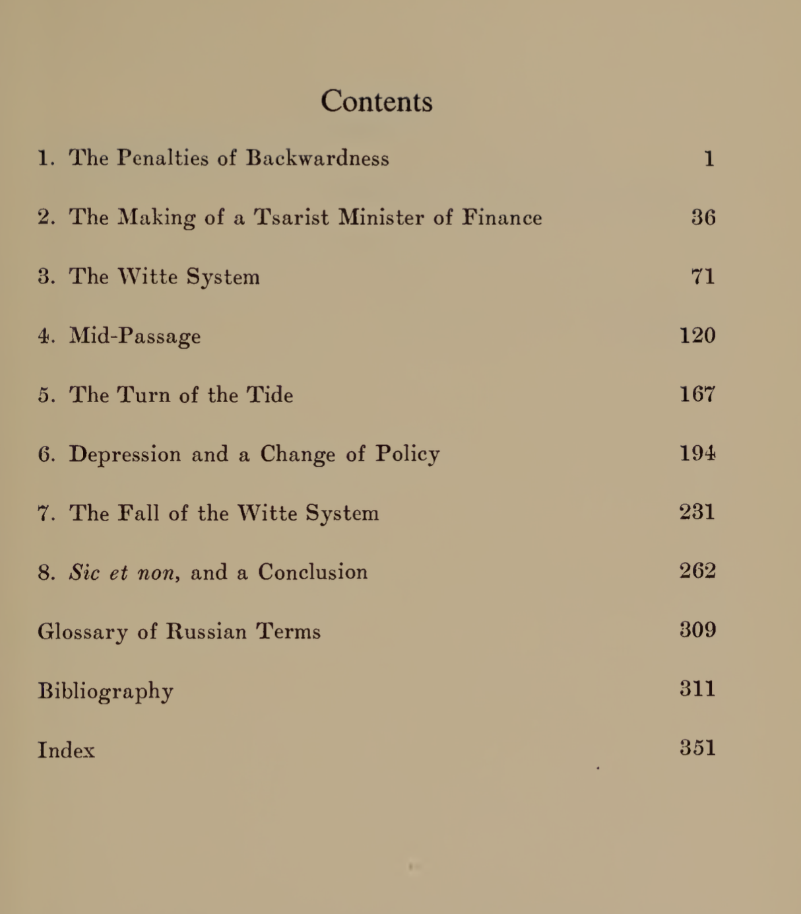
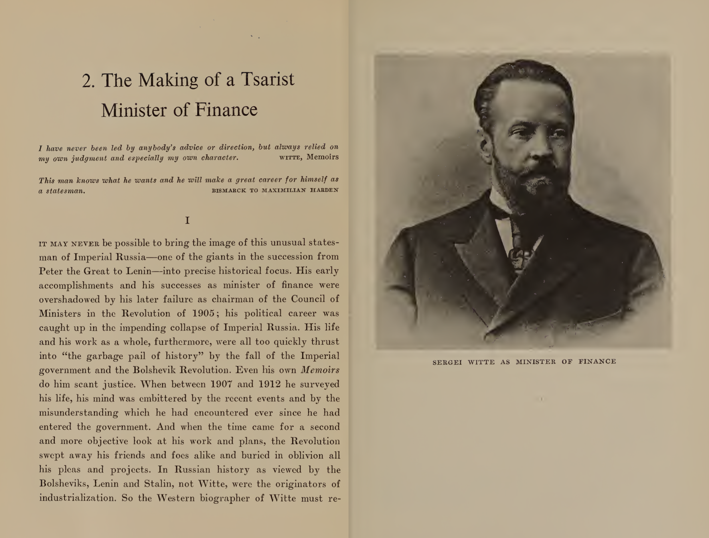

How Russia’s industrialization started in 19th century?
Abolishing of Serfdom and Sergei Witte’s role
Abstract
Russia industrialized between 1880 and 1920 by replacing a forced agricultural economy with productive institutions. Serf emancipation freed labor to move, and Witte’s system later mobilized the capital required to introduce heavy industries through finance, tariffs, and trans-siberian railway. I use this sequence to evaluate Tamil Nadu’s modernization capacity today: the 2024–25 budget reveals how much spending is locked into committed obligations versus capital formation, and what that implies for building globally competitive industries.
Russian History
This exploratory essay examines Russia’s 19th-century industrialization and what it reveals about Tamil Nadu’s present budget priorities and modernization trajectory.

Russian History offers unusual insights into state led industrialization. From rise of Tsar’s that lead to centralization of Russian empire to fall of Soviet Union. Among many chapters from Russian History, one that stands out with lasting impact is Emancipation of Serfs in 1861.
While there is lot to be said about the Russians and Russian History. Geographically, Russia is the largest by area, contains over 190 ethnic groups. Russian Modernization is something to be understood, studied and drawn lessons for our present age of time.
Emancipation of Serfs
On March 3, 1861, an empire did something that sounded impossible, Tsar Alexander II, issued Emancipation Manifesto. By this edict more than 23 million people suddenly became free. This allowed the serfs to marry anyone without permission. The serfs could own their own land and had legal rights. Many Serfs remained poor, landless, they suffered. Land ownership patterns fell for aristocrats, from 80% to 50% and peasant land ownership grew from 5% to 20%. It was not until 1906, Russians had the Duma (parliament).
The Tsar read the following edict.
Edict
We, Alexander II, by the grace of God, Tsar and Autocrat of all the Russias, King of Poland, Grand Duke of Finland, et cetera, make known to all our faithful subjects:
“As we consider the various classes of which the state is composed, we are convinced that the laws of our Empire, which have wisely provided for the upper and middle classes and had fixed with precision their rights and obligations, have not reached the same degree of success in relation to the peasants bound to the soil who, either through ancient laws or custom, have been hereditarily subjected to the authority of the landlords. Indeed, the rights of landowners over their service have hitherto been very extensive and very imperfectly defined by the laws, which have been supplemented by tradition, custom and the goodwill of the landlords…
The peasants now bound to the soil shall, within the term fixed by the law, be vested with the full rights of free men. The landed proprietors, while they shall retain all rights of ownership over all the land is now belonging to them, shall transfer to the peasants, in return for a rent fixed by law, the full enjoyment of the cottages, farm buildings and gardens. Furthermore, in order to assure to the peasants their subsistence and enable them to meet their obligations towards the state, the landlords shall turn over to the peasants a quantity of arable and other land provided for in the regulations above mentioned.
In return for these allotments, the peasant families shall be required to pay rent to the landlords, as fixed by the provisions of the law. Under these conditions, which are temporary, the peasant shall be designated as temporarily bound.
At the same time, the peasants are granted the rights of purchasing their cottages and gardens, and with the consent of the landlords, they may acquire in complete ownership the arable lands and other lands allotted to them as a permanent holding. By the acquisition of a complete title to the land assigned them, the peasant shall be freed from the obligation toward the landlords for land thus purchased, and thus enter definitively into the class of free peasants and landowners…
In order to render the transactions between landlords and peasants easier, so that the latter may acquire in full proprietorship warehouses and the adjacent lands in buildings, the government will grant them assistance, according to a special regulation through loans of money or a transfer of mortgages encumbering an estate…
We now confidently hope that the freed serfs, in the presence of the new future which is opened before them, will appreciate and recognise the considerable sacrifices which the nobility has made on their behalf. They will understand that the blessing of an existence based on full ownership of the property, as well as the greater liberty in the administration of their possessions, entails upon them new duties towards society and themselves, the obligation of justifying the new laws by a loyal and judicious use of the rights which are now accorded to them.”
Given at St Petersburg on February 19 of the year of grace 1861, the seventh of our reign. Alexander II

Russia was largely agrarian economy in entire 1800-1920s. In Tamil Society, to this day, MBC, SC/ST hold less-land, and are mostly in poverty due to their past condition a century ago.
In the 18th and 19th century, Russians were deeply influenced by enlightenment writers as John Locke, Montesquieu, Jean-Jacques Rousseau, Adam Smith, Immanuel Kant. Each writer published, wrote extensively and questioned the social norm of the day as divine rights of the kings, hereditary privileges, serfdom and slavery and communicated for a reason based secular societies.
In Russian History there’s constant tensions of Russia desiring to become more europeanized, starting from Peter the Great (1672-1725), who founded beautiful city of St. Petersburg, building navy, and a strong administrative, all with the desire to become a great European power.
There’s westernizers and slavophiles in Russian history, even in broader Tamil Nadu, we see similar tensions where the urban educated are more westernized and the rural people are traditional more grounded with local Tamil ways.In terms of achieving great power, South India or none of the states, leaders seek to push their state towards global levels.
This is partly due to political leaders not setting global aspirational goals, nor their level of their training. For example, from 1950-2025, at the political state level, leaders of Tamil Nadu are consumed by their own political party’s sustenance, internal issues that they do not have the time to think broader goal of pushing the state towards advanced levels.
Slavery in Tamil Nadu
In Present Tamil Society, slavery is not discussed at great lengths. It is not a topic of focus for majority, does not occupy chapters of middle-high school history textbooks. Slavery was practiced in Tamil Nadu. It was the English who pushed hard to abolish it by passing Slavery abolition act 1833, and by Act V of 1843, it was officially abolished. At present, Tamil History has been mostly dominated by rhetoric of two political parties, who mostly tie Tamil history to promote their own political party’s interest.
To this day in Tamil Nadu, majority of the lower castes or families descendants from slavery in Tamil Nadu struggle with landlessness. Even though there is affirmitive action and more than 150 years has passed, the effects of slavery remains among many Tamils.
In History of Tamil Society, 20th century, Tamil-political thought and conversation has been dominated by active social uplightment of all, providing social benefits to all. Even contemporary Tamil society is being pulled in the same direction with strong conversation of social justice, in the name of Dravidian ideology. The educated Tamils from all walks of life, from industrialists, politicians, writers, figures from movie industry are all onboard with this ideology. However there’s absence of any other competing direction in political thought and economic development. Tamil Nadu’s government’s focus needs to shift towards modernization, industrialization, promotion of Science and Technology.
Slavery in Tamil Nadu was abolished in 1843, left descendants of enslaved castes disproportionately landless, much as Russian serfs remained poor after 1861 emancipation. But here the parallel breaks down. Russia followed emancipation with Witte’s aggressive industrial policy, which enabled rapid industrialization. Tamil Nadu, by contrast, pursued affirmative action and welfare expansion—but developed no comparable world-class industrial sector.
Serfs in Russia were not slaves, they were unfree peasants, while slaves were considered as property. There were categories of serfs in Russian society. The ones who lived on Government owned land, ones who lived on Tsars land and the one’s who lived in nobles land. The ones who lived in nobles had less rights, faced cruel treatment by nobles, even when they complained to Tsar, had no guarantee that justice would be accountable.
Despite, Peter the Great’s reforms, Russia remained semi-feudal, majority of the population remained serfs, who were tied with lands, having no civil rights. Russian educated populace, literary writers, read french, German, English enlightenment writers and were influenced. The pressure was to reform Russia to match liberty, rational governance, progress. The serfs were holding back Russia from matching European progress. The nobility was locked in debt, as their land were inefficient, and they lacked capital.
The Crimean War of 1853, between Russian Empire, Ottoman Empire, Great Britain, Kingdom of Sardinia (Italy) showed Russia that it was economically backward, the army was built on conscripts from serfs, infrastructure was outdated, modernizing Russia meant serfdom was to be abolished. Moreover, serfdom made agrarian economy inefficient, as serfs had no incentive to work hard or innovate on their land, as they had no autonomy or ownership of the land.
Among many who pushed towards reform, was Nikolay Milyutin. Nikolay Milyutin was an aristocrat (1818-1872) who watched poor treatment of serfs in his father’s estate, the serfs were beaten mercilessly, flogged repeatedly with no mercy. Milyutin and his brother, went on to become the chief architect of Emancipation reform of 1861 in Russia.
Modernization of Russia: 1850-1910
While the serfs got emancipated, there were broader effects in Russian Society. Russian modernization started with the emancipation of serfs, many have noticed the agricultural productivity rising. The Crimean war defeat also was another reason, where it showed weakeness in Russia’s army and logistic failures.
Markevich & Zhuravskaya, prominent Economic historians, focus on Russian economic history. In their econometric study, they document, after serf emancipation, substantial increase of agricultural productivity, industrial output, and peasants’ nutrition.
Excerpt from Markevich and Zhuravskaya (2018)
“The Economic Effects of the Abolition of Serfdom: Evidence from the Russian Empire”
We document substantial increases in agricultural productivity, industrial output, and peasants’ nutrition in Imperial Russia as a result of the abolition of serfdom in 1861. Before the emancipation, provinces where serfs constituted the majority of agricultural laborers lagged behind provinces that primarily relied on free labor.
The emancipation led to a significant but partial catch up. Better incentives of peasants resulting from the cessation of ratchet effect were a likely mechanism behind a relatively fast positive effect of reform on agricultural productivity. The land reform, which instituted communal land tenure after the emancipation, diminished growth in productivity in repartition communes.
Russian industrialization began to accelerate in the late 1880s and continued throughout the twentieth century. Sergei Witte played a pivotal role in this process, as the Tsarist state became increasingly, involved in modernization efforts during the late 1880s and early 1890s
Report on Russian Industrialization
Sergei Witte (1849-1915) played a key role in modernizing Russia. He lived during turbulent times in Russia. Witte worked in railroad management for 20 years. He started his job as a clerk. As he progressed in his career, he published Principles of Railway Tariffs for Cargo Transportation in 1883. This work laid out principles for railway pricing and management, including the need for tariffs to cover costs and make a profit, respond to market demand, and be clearly published to ensure public access. His work gained influence, he was appointed managed of a privately managed railways in Kiev. He was known to increase its efficiency and profitability for Southwestern Railways.
Once, he was appointed as minister of Finance, he ordered a comprehensive report on Russia’s industrialization, from, Department of Trade and Manufactures. He raised alarms as Russian state was solely depended on Agricultural economy, meanwhile Western peers were ahead and industrialized.
He says, As proof of Russian backwardness he referred to the per capita consumption of key items like coal, iron, and cotton in various western countries and in Russia, and to the fact that Russia was predominantly an agricultural country and one suffering greatly from the uncertainty of its climate
In short, the report stated the wealthy conservative landowners, were not interested in developing other sectors of the economy. The peasants were interested in only cultivating the land.
“Although the government and a few enlightened people made great efforts to establish in Russia various forms of mining and manufacturing industry, and although the rapid development of certain works and manufactories – for example, the metallurgical works in the Urals, the factories around Moscow, the beet industry near Kyiv, the petroleum industry in Baku – demonstrated the existence of the conditions in Russia essential to industrial progress, nevertheless, the economic development of the empire moved very slowly. In fact, it did not keep pace with the other features in Russian advancement. For example, the development of science, the advances of literature, music, and painting, the multiplication of the implements of war, and increasing demands for articles of foreign production.
The chief cause of the feebleness of the development of the home manufacturing consisted for a long time in the whole organisation of Russian life, which was centered in the peasantry. [This group] directed all its energies to agricultural production, and employed for the attainment of this object only the resources which lay immediately at hand, such as the replacement of lands exhausted by cultivation by fresh lots, homemade implements, and the felling of forests.
The rural gentry, or large landholders, having serf labourers bound to them, employed them also mainly in the cultivation of the land. Like the peasants, they strove to satisfy their wants as far as possible from their domestic resources, only having recourse to the productions of manufacturing industry as a luxury. Thus houses were built chiefly of wood from their own estates by their own carpenters, who had attained extraordinary skill in their trade. Clothing also was, in the main, woven from homegrown flax and wool or made from home furs and skins.
In the matter of food, the people confined themselves so strictly to their domestic resources that the preparation for winter of various preserves, beginning with salted and soured vegetables and ending with the making of confectionery and sparkling drinks, formed part of the business of every well?to?do household. This patriarchal state of domestic economy, preserved with due reverence for the old order of things here and there to this day, prevailed over the whole country, even in the middle of the present century.
There was, therefore, little chance for a demand for the products of manufacture, a fact which till now serves as the chief explanation of the feeble development of the latter in the empire. All that there is, in this respect, is almost entirely new.
Mills and manufactories first appeared in those places where from the growth of the population and the exhaustion of the soil or the want of land, the conditions permitting of the indefinite preservation of the beloved patriarchal system were disappearing. Particularly, and earlier than anywhere else, was this the case in localities situated near Moscow, where there is already a very dense population.
In that province, for example, more than 2,250,000 inhabitants live upon an area of 33,300 square kilometers, or about 68 inhabitants to the square kilometer. At the same time, the dwellers in the central or Moscow region of Russia have been distinguished in all respects from the earliest times by their greater enterprise, and have always been to the fore in seeking out new expedients for the permanent development and strengthening of their country.
With the increase of population in this heart of Russia, for a long time, and even today, the surplus has been colonising the more distant districts of the empire, but notwithstanding this, here earlier than elsewhere, appeared the conditions necessary for the springing up of mills and manufactories requiring such labor as was not employed in agriculture. Accordingly the neighborhood of Moscow, from ancient times the center of Russia’s trade relations not only with the interior but with foreign countries, especially with Asia, has become the center for the free and independent growth of many kinds of manufactories and works.”
Influence of Friedrich List on Sergei Witte
Friedrich List frequently comes up in free trade vs protectionism debates. His work is still relevant, his ideas contributed to American school of economics, which is largely mixed protectionism, government infrastruture spending, and national bank, which promotes growth of productive enterprises.
Fredrich List (1789-1846) was a German-American economist, political theorist who published, The National System of Political Economy (1841). List developed theory of productive powers. The theory states, that a nation’s true wealth lies not in its accumulation of immediate exchange values (gold or commodities), but in the development of its productive forces (e.g., human capital, infrastructure, technology, institutions).
He famously stated that the power of producing wealth is therefore infinitely more important than wealth itself. Investing in a nation’s long-term productive capacity might require a short-term sacrifice of immediate consumer benefits
In List’s work, he favored protective tarrifs and trade retaliations between industrial nations, even if they maintain free trade within each country. Sergei Witte was greatly influenced by List’s ideas, translated his writings into Russian and implemented them towards Russian empire’s industrialization efforts.
List promoted the “infant industries” argument, which advocated for protective tariffs to shelter a nation’s developing manufacturing industries from established foreign competition. Once the domestic industrial base was strong enough, the tariffs could be reduced. The impact of Witte’s policies were successful on industrial front, however they had structural issues on social and neglecting agrarian base.
Banking Reforms
Witte wrote to the Tsar justifying the need for borrowing foreign capital.
In a letter to the Tsar, Witte emphasized “The influx of foreign capital is, in the considered opinion of the minister of finance, the sole means by which our industry can speedily furnish our country with abundant and cheap goods.”
In order to Modernize the Russian Empire was to finance industrialization and stabilizing the economy. This was done through State banks using monetary and credit policies. Russian rouble with placed with gold standard. This stabilized the currency, making it more attractive to foreign investors. This also increased Russia’s creditworthiness, allowing it to borrow money on best terms for its industrial projects. The State Bank provided significant credit to factories across the country.Witte invited investors from countries like France, Belgium, and Germany to invest in Russian mining, metallurgy, and oil sectors, resulting in a dramatic increase in foreign ownership of these industries.
Witte, facilitated the sale of Russian assets, such as oil fields and mines, to foreign investors and encouraged the influx of foreign engineers and expertise to support industrial development. Foreign investment in Russia skyrocketed, leading to an unprecedented period of industrial growth, with Russia tripling its mining and manufacturing output within two decades. By 1900, Russia was producing three times as much iron and more than twice as much coal as in 1890, largely due to the influx of foreign capital and technology.
Russian Tariffs of 1891
Dmitri Mendeleev (1834-1907) is a famous Russian chemist. He was active as a scientist and also published widely beyond chemistry from 1870s. He looked at various aspects of Russian industry, technical issues of agricultural productivity. He took active interest in comparing the state of the art, petroleum industry which was in Pennsylvania, US with that of Russia’s, he persuaded the ministry of finance to impose temporary tariffs to protect the infant russian industry, which was growing.
Russian high protective tariff of 1891, often called the Mendeleev Tariff, was a major economic policy that aimed to foster national industry and accelerate Russia’s industrialization. Influenced by economist Dmitri Mendeleev, the tariff aimed to protect domestic manufacturers from foreign competition while also generating government revenue.
This tariff is considered the foundation for Russia’s rapid industrial growth at the turn of the century, though some sources note it was a product of government policy and influenced by international economic conditions. The tariff was implemented under the administration of Finance Minister Sergei Witte and became the cornerstone of his industrialization strategy.The tariff is credited with contributing to Russia’s rapid industrial development in the late 19th and early 20th centuries.
Despite its success in promoting industrial growth, it is also seen as contributing to the Great Famine of 1891-1892 by prioritizing grain exports for revenue, which exacerbated the effects of crop failure.
Establishment of Elective council
Tsar Alexander II established Zemstvo, a rural elective council who were responsible for overseeing a town’s social and economic services. The idea of Zemstvo was from Nikolay Milyutin, who expanded largely the system. So for rural towns, local services like public education, healthcare, sanitation, and veterinary services were under the Zemstvo. This shifted the political power in local rural governance from landlords to self-governance or serfs. The biggest breakthrough and achievement, of Zemstvo, was literacy rising from 10% to 68%, while in rural russia, for healthcare faith-healers were active, medical system grew slowly due to Zemstvo system. However, the faith healers or feldshers remained part of rural Russian’s lives.
Judicial Reform of 1864
As part of his reforms, Tsar Alexander II transformed Russian legal system with more european lines making it more unified. Previous, the Russian judiciary was estate based and fragmented, where person’s rights were depended on their social status. The Churches, commercial court, military all had parallel jurisdiction creating chaos and confusion. The Tsar unifed all of this together, with independendent judges, with impartial rule of law. Many consider this to be most successful reform of the Tsar.
Russian Military Reform
Before introduction of reforms, conscription in the Russian Empire was limited only to peasants. While other social classes as nobles, townspeople were exempt from military service. This place heavy burden on pesants and serfs had to serve for 25 years, selected by landowners. This resulted in infantry being filled with poorly qualified, motivated and incompetent soldiers. The introduction of reform made universal conscription for all males, regardless of class.
Trans-Siberian Railway
In Russian Empire’s administration, talks of building large railways had existed. However, Trans-Siberian Railway started in 1891. The primary goal was to serve military and economic needs. Siberia was rich with raw materials, that needed to be connected with industrial centers. The railways provided an efficient transportation of timber, iron ore, coal, gold, lead and zinc. The real force behind executing was Sergei Witte, the indomitable minister of finance.

The Trans-Siberian railway was built with strict budget, deadlines, immigrant workers were hired from China and other parts of Asia. The costs of construction reached over $250 million, twice the original estimate. Witte remained resolute in his goal, and wrote in his memories, “I devoted myself body and soul to the task.”
Theodore H. Von Laue’s book
One important work to understand, industrialization of Russia is from work of American Historian. Written by Theodore Hermann Von Laue, “Sergei Witte and the Industrialization of Russia” published 1963. This work goes details into Sergei’s life and industrialization of Russia.


Serge Witte’s foundational belief was that political power was now measured in terms of industrial productivity.
He argued that Russia could only achieve greatness if it ceased being an exclusively agricultural country, as a state lacking strongly developed industry could not be a great power. Confronted by Russia’s poverty, backwardness, and the rush of Western genius, Witte insisted that the country prioritize avoiding “the peril of remaining behind”.
Witte’s strategy was fundamentally an experiment in state capitalism, where the state acted as the primary agent for promoting economic activity and prioritizing state interests. The ultimate goal, however, was for the economy to eventually run independently, similar to Western countries, relying on private initiative stimulated by state action.

Witte implemented a coherent “system” encompassing the above policies. Witte’s ambition was to use these powerful state tools the “Witte System”, to drive Russia through the painful transition from an agrarian nation to a modern industrial power, thereby securing its position as a leading civilized nation on the global stage.
From Witte’s system, We move towards Tamil Nadu, a state located in Southern India.
It matches similiar to Witte’s era, trying to modernize, facing a different but parallel challenge.
Tamil Nadu’s budget
Missing modernization agenda
This section analyzes the Tamil Nadu Government’s budget and spending for the financial year 2024–25.
Link to Tamil Nadu Budget 2024-2025
Government Spending (2024-2025)
| Item | Amount in crores | ~USD | Notes. |
|---|---|---|---|
| Total Expenditure | 4,12,504 | $46.17B | Budgeted spending for 2024–25 |
| Committed Expenditure | 1,89,897 | $21.25B | ~46% of total spending; stated as 64% of revenue receipts |
| Capital Expenditure (Capital Outlay) | 47,681 | $5.34B | +12% over 2023–24 (RE), per your draft |
| Loans & Advances | 16,534 | $1.85B | Loans to PSUs/local bodies, etc. |
Committed Expenditure
| Component | Amount in crores | ~USD | Share of revenue receipts |
|---|---|---|---|
| Salaries (Govt Employees) | 84,932 | $9.51B | 28% |
| Interest Payments (Debt Servicing) | 62,456 | $6.99B | 21% |
| Pensions (Retired Employees) | 42,509 | $4.76B | 14% |
| Total (Committed) | 1,89,897 | $21.25B | 64% |
Sector Spending
| Sector | Amount in crores | USD in ~B | % Change from 2023–24 | Key focus |
|---|---|---|---|---|
| Education, Sports, Arts & Culture | 54,327 | 6.08 | +12% | Schools/colleges, Tamil Pudhalvan scheme |
| Social Welfare & Nutrition | 34,548 | 3.87 | +14% | Magalir Urimai, welfare programs |
| Agriculture & Allied Activities | 24,232 | 2.71 | +15% | Farmer support, irrigation, rural development |
| Transport | 23,828 | 2.67 | +12% | Roads, bridges, public transport |
| Energy | 21,606 | 2.42 | -11% | TANGEDCO subsidies, power infra |
| Health & Family Welfare | 19,730 | 2.21 | +5% | Hospitals, public health programs |
| Rural Development | 12,043 | 1.35 | +25% | Village infra, housing |
| Police | 11,965 | 1.34 | +11% | Law enforcement, public safety |
| Irrigation & Flood Control | 7,763 | 0.87 | +9% | Water management, dam maintenance |
| Water Supply & Sanitation | 6,993 | 0.78 | +58% | Drinking water projects, sewage |
CapEx spending
Government capital expenditure is money spent on acquiring or improving long-term assets, such as infrastructure, buildings, and equipment, to provide future benefits. These expenditures include building roads, schools, and hospitals, as well as investments in technology and other fixed assets that have a lifespan of more than one year. So, In Tamil Nadu Government’s spending, here is where it is going
| Program/Item | Amount (₹ crore) | USD (approx., $M) | Physical target |
|---|---|---|---|
| Kalaignarin Kanavu Illam housing scheme | 3,500 | 391.7 | 1 lakh houses |
| Rural road development | 1,000 | 111.9 | 2,000 km |
| Urban road upgrades | 2,500 | 279.8 | 4,457 km |
| Hogenakkal water supply scheme (Phase 2) | 7,890 | 883.0 | — |
| New overhead tanks | 365 | 40.9 | 2,000 tanks |
Loans given by the state
| Category | Amount (₹ crore) | USD (approx.) | Notes |
|---|---|---|---|
| Loans & Advances | 16,534 | $1.85B | Loans to public entities/PSUs/local bodies |
How the money is being spent?
The budget reveals substantial subsidies to TANGEDCO, totaling ₹17,117 crore annually, to cover operational losses. Even though, We hear of price hikes among consumers for electricity, it is subsidized. The interest paid by Tamil Nadu as interest on its debt.
| Item | Amount (₹ crore) | USD (approx.) | Notes |
|---|---|---|---|
| TANGEDCO losses / subsidy | 17,117 | $1.92B | 2019–25 grants total ₹73,821 crore; loss per unit ₹1.05/kWh vs national avg ₹0.74/kWh |
| Interest burden | 62,456 | $6.99B | Outstanding debt stated as 26.4% of GSDP |
Money is spent mostly on these categories
| Category | Direction | % Change from previous year |
|---|---|---|
| Social Welfare | Up | +14% |
| Agriculture | Up | +15% |
| Rural Development | Up | +25% |
| Water Supply | Up | +58% |
| Health | Up | +5% |
| Energy | Down | -11% |
So, out of every ₹100 the government spends: ₹46 goes to salaries, pensions, and interest, ₹38 to welfare and recurring programs, ₹11.6 to capital infrastructure, and ₹4 to loans given to PSUs or other bodies.
Conclusion: From Welfare statism to Modernization: Will Tamil Nadu modernize?
Currently, Tamil Nadu’s government model has been Welfare statism, where the state strongly provides large number of welfare programs. It is essential for the state to help citizens, who have gone through unfortunate events. However, active promotion of industrialization in terms of pushing for state of the art World class industries has not been part of the state since centuries.
Budget allocation towards modernization has been absent in Madras Presidency or state of Tamil Nadu. Even though, lot of commentators have proudly advanced Tamil Nadu as one of the most economically advanced state in India. Majority of the political, social discourse and political thought is focused inwardly, rather than to push the state towards a globally advanced region. There’s serious gaps in implementing economic and industrial reforms, particularly by the council of Ministers.
In order to Modernize, the state needs to actively invest in technological infrastructure, industry modernization, or future-oriented R&D. Even growth oriented spending like structurally reforming the Government spending with state owned enterprises and productivity-enhancing investments. Tamil Nadu would require ministers like France’s Jacques Necker, who served as finance minister from 1777 to 1781 and pioneered public financial transparency, or Sergei Witte, who initiated Russian industrialization from 1891.

I conclude with three questions:
- What would a “Witte system” for Tamil Nadu look like?
- Do we have any such vision and plans for making Tamil Nadu being economically and technologically most advanced in the entire Globe?
- Why not?
“The power of producing wealth is infinitely more important than wealth itself.” –Friedrich List, The National System of Political Economy (1841)
Sources
Alexander II. Emancipation Manifesto. St. Petersburg, February 19, 1861. Translation available in: Vernadsky, George, ed. A Source Book for Russian History from Early Times to 1917. Vol. 3. New Haven: Yale University Press, 1972.
List, Friedrich. The National System of Political Economy. Translated by Sampson S. Lloyd. London: Longmans, Green and Co., 1841. Available via Online Library of Liberty: https://oll-resources.s3.us-east-2.amazonaws.com/oll3/store/titles/315/List_0168_EBk_v6.0.pdf
Witte, Sergei. Report on the Condition of Industry and Trade. Department of Trade and Manufactures, Ministry of Finance, Russian Empire, 1893. Excerpts translated in Von Laue, Theodore H. Sergei Witte and the Industrialization of Russia. New York: Columbia University Press, 1963.
Government of Tamil Nadu. Budget Estimates 2024-2025. Chennai: Finance Department, 2024. Accessed December 2024. https://tn.gov.in/budget
Stalin, M.K. Budget Speech 2024-2025. Delivered before the Tamil Nadu Legislative Assembly, February 2024. https://tn.gov.in/budget/speech
Government of Tamil Nadu. Detailed Demands for Grants 2024-2025. Chennai: Finance Department, 2024.